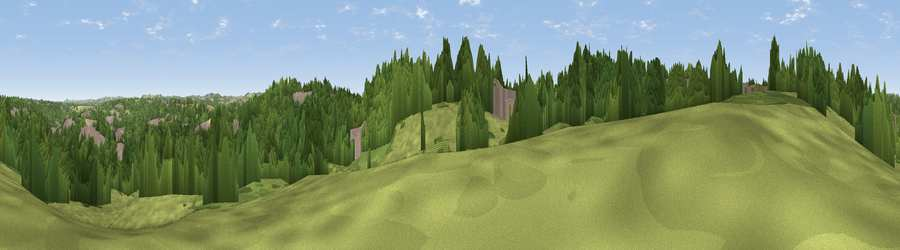

Observatory Hill
#37666 in England · top 82% of its area beats it · near DurhamThe view, rendered

A 360° render of this exact spot computed from the terrain model, tree cover and land cover — summer colours, afternoon light, calibrated against photographs of famous viewpoints. Real trees, hedges and buildings will differ in detail.
The panorama
Grey silhouette: terrain skyline in each direction (720 bearings, Earth curvature and refraction included). Dashed green: skyline with trees (+15 m) and buildings (+8 m) as obstacles. Blue strip: how far the ground is visible on each bearing.
Where the view opens
Wedge length = distance to the farthest visible ground on that bearing (vegetation-aware). Rings at 10, 25 and 50 km.
What fills the view
55% woodland · 27% grassland · 13% built-up · 4% cropland ·
Angular shares of the visible panorama (visual magnitude), not map area. Landscape diversity 0.48 (0–1 Shannon).
Key numbers
More beautiful places nearby
The staircase of upgrades: each row has a higher view potential than everything closer. Driving times are estimates from straight-line distance, calibrated against real road routing — check an actual route before setting out.
| Place | Direction | Drive | Score |
|---|---|---|---|
| Viewpoint near Shincliffe | ESE · 1 km | ~3 min | 41.4 |
| Viewpoint near High Shincliffe | SE · 3 km | ~7 min | 44.5 |
| Viewpoint near Brandon | WSW · 4 km | ~10 min | 53.4 |
| Viewpoint near New Brancepeth | WSW · 5 km | ~11 min | 60.6 |
| Viewpoint near Sacriston | NNW · 6 km | ~12 min | 66.4 |
| Viewpoint near Bowburn | ESE · 6 km | ~13 min | 69.0 |
| Brandon Hill | WSW · 6 km | ~14 min | 69.7 |
| Viewpoint near Quarrington Hill | ESE · 7 km | ~14 min | 73.1 |
54.76739, -1.58394 · source: osm viewpoint · position refined by local search. Computed location — check access rights before visiting.